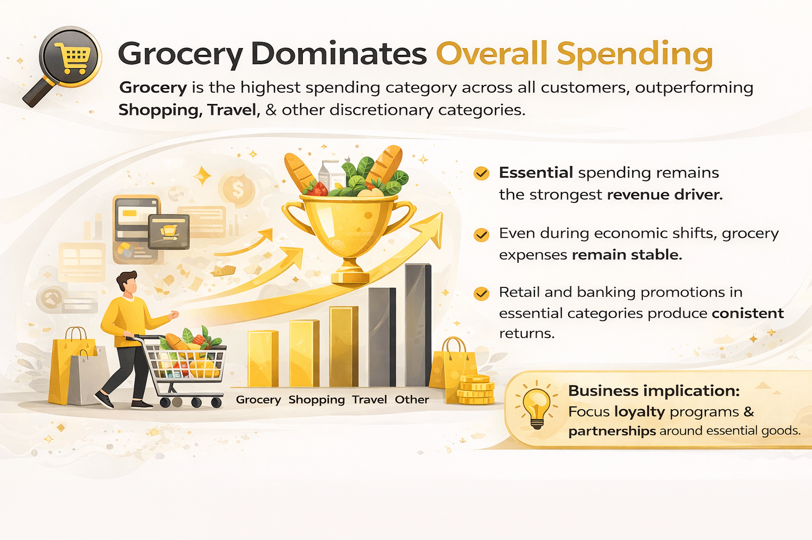
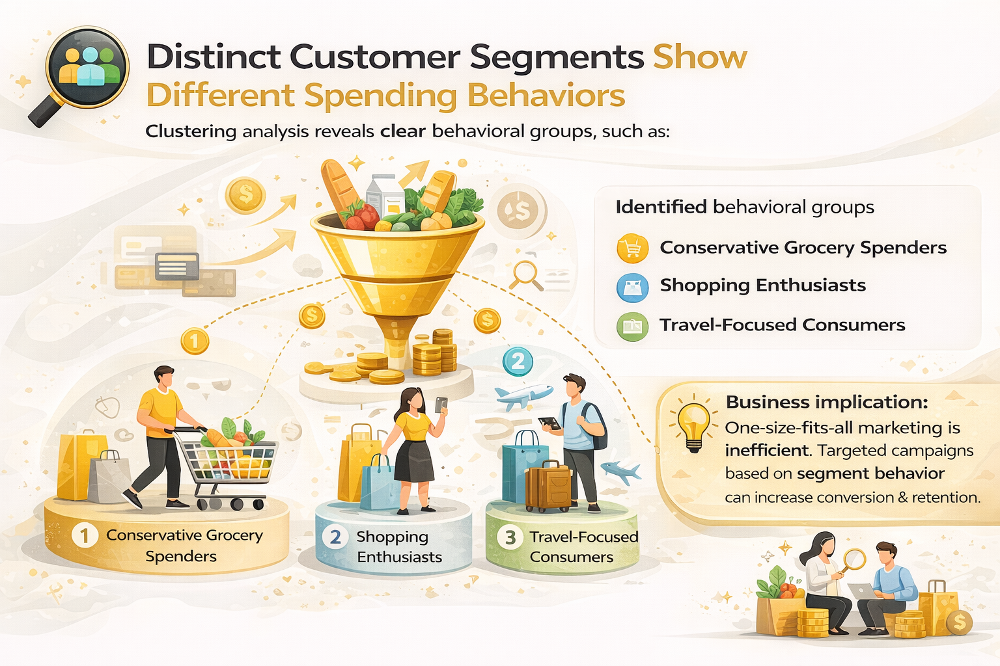
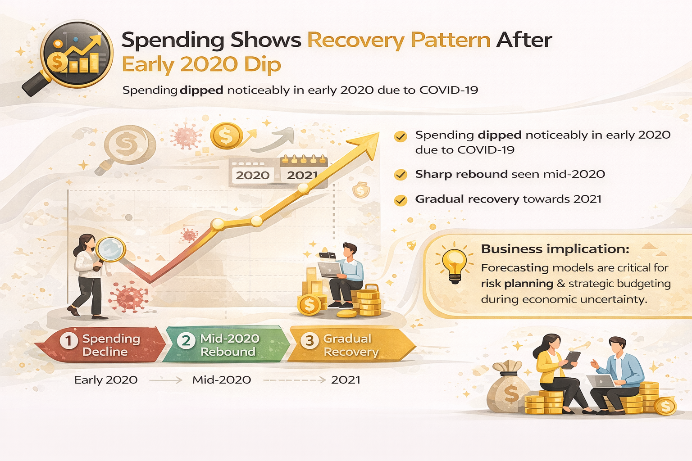

Spending Behavior Analysis



Project Overview
This project analyzes credit card transaction data to uncover customer spending patterns, identify meaningful market segments, and forecast future spending behavior.
Techniques applied include Exploratory Data Analysis (EDA), K-Means Clustering, Apriori Association Rule Mining, and ARIMA Forecasting.
🔗Project Repository: GitHub – Spending Behavior Analysis
Dataset Description
- Transaction Year & Month
- Spending Categories (Grocery, Shopping, Travel, etc.)
- Total Transaction Amount
- Customer Demographics (Gender, Job, Date of Birth)
Data Visualizations
Spending by Category
Spending by Gender
Average Spending by Salary Range
Spending by Generation
Spending Trend Overview
Key Insights
- Grocery is the highest spending category overall.
- Females contribute 55% of total spending.
- Lower income groups show relatively higher average credit card usage.
- Millennials and Gen Z represent the highest average expenses.
- Seasonal fluctuations were observed during 2020 due to pandemic impact.
Conclusion
This project proves that customer transaction data is more than just numbers — it is a strategic asset. By combining Customer Segmentation, Association Rule Mining, and Spending Forecasting, businesses can shift from reactive reporting to proactive decision-making.
🔍 What This Means for Businesses
- Target Smarter, Not Wider: Replace generic campaigns with behavior-based targeting. Grocery-focused customers respond to essential discounts, while travel-oriented customers react better to seasonal offers.
- Increase Retention Through Personalization: Segmentation enables customized loyalty programs that align with real customer spending patterns.
- Plan Ahead with Forecasting: Time-series analysis helps anticipate seasonal shifts, manage budget allocation, and reduce financial risk.
- Optimize Revenue Strategy: Focus on high-value segments and high-frequency categories to maximize return on marketing spend.
Bottom Line: Organizations that leverage behavioral analytics gain a competitive advantage by making data-backed decisions that improve conversion rates, customer loyalty, and long-term profitability.